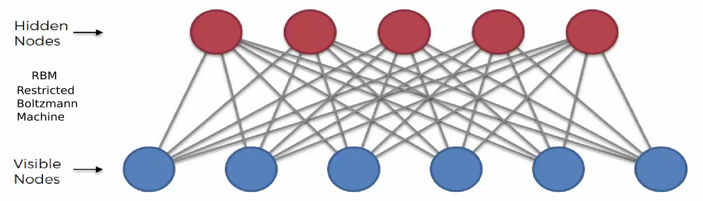
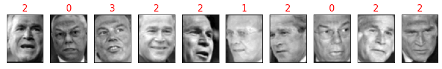
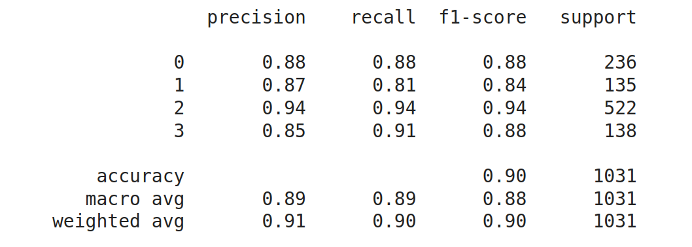
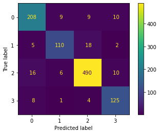

Restricted Boltzmann Machine è un unsupervised model of Deep Learning in cui abbiamo un numero di layer visibili
e altri layer nascosti ma non si ha bisogno di conoscere la label relativa ai dati inseriti in input perchè non sono
necessari al modello per elaborare una previsione.

Qui questo modello e nello specifico il BernoulliRBM coniugato con il LogisticRegression Classifier viene applicato per individuare un volto inserito in input indicando a quale classe appartiene.
Per utilizzare gli hyperparameter migliori si utilizza GridSearchCV fornito da SciKit Learn.
%matplotlib inline
import numpy as np
import os, cv2, time
from sklearn.model_selection import train_test_split, GridSearchCV
from sklearn.pipeline import Pipeline
from sklearn.neural_network import BernoulliRBM
from sklearn.linear_model import LogisticRegression
from sklearn.metrics import classification_report , confusion_matrix
import matplotlib.pyplot as plt
from scipy.ndimage import convolve
from sklearn import linear_model, datasets, metrics
from sklearn.datasets import fetch_lfw_people
from skimage.transform import resize
from sklearn.preprocessing import MinMaxScaler
Download delle immagini
lfw_images = fetch_lfw_people(min_faces_per_person=120, resize=0.5)
n_images, height, width = lfw_images.images.shape
# dati immagine flatten
x = lfw_images.data
features = x.shape[1]
# target number class
y = lfw_images.target
names = lfw_images.target_names
n_classes = names.shape[0]
print('Numero immagini ', n_images , ' in ', n_classes, ' classi di dimensione ' , height , width )
Output
Numero immagini 1031 in 4 classi di dimensione 62 47
Funzione per visualizzare immagini che saranno inserite in input nel modello
def show_images(images, label, h, w, n_row=1, n_col=10):
plt.figure(figsize=(10, 6))
plt.subplots_adjust(bottom=0, left=.01, right=.99, top=.90, hspace=.35)
for i in range(n_row * n_col):
plt.subplot(n_row, n_col, i + 1)
plt.imshow(images[i].reshape((h, w)), cmap=plt.cm.gray)
plt.title(label[i], color = 'red' , size=15)
plt.xticks(())
plt.yticks(())
Funzione per ampliare le dimensioni delle immagini per migliorare le perfomance del modello
def nudge_dataset(X, Y):
"""
This produces a dataset 5 times bigger than the original one,
by moving the images in X around by 1px to left, right, down, up by sklearn
"""
direction_vectors = [ [[0, 1, 0],[0, 0, 0],[0, 0, 0]],[[0, 0, 0],[1, 0, 0],[0, 0, 0]],[[0, 0, 0], [0, 0, 1], [0, 0, 0]],
[[0, 0, 0], [0, 0, 0], [0, 1, 0]]]
def shift(x, w):
return convolve(x.reshape((height, width)), mode='constant', weights=w).ravel()
X = np.concatenate([X] + [np.apply_along_axis(shift, 1, X, vector) for vector in direction_vectors])
Y = np.concatenate([Y for _ in range(5)], axis=0)
return X, Y
Visualizzazioni di alcune immagini
show_images(x_test,y_test,height , width)

Con nudge_dataset aumenta dimensioni imagini poi si scalano i valori tra 0 e 1 per facilitare i calcoli.
successivamente si divide il file di input immagini(x) e label(y) in 2 uno per il train del modello ed 1 per il test
del modello creato
x, y = nudge_dataset(x, y)
scaler = MinMaxScaler()
x = scaler.fit_transform(x)
x_train, x_test, y_train, y_test = train_test_split( x , y, test_size=0.2, random_state=0)
Istanziazione del modello BernoulliRBM e LogisticRegression che poi vengono congiunti con Pipeline creando un unico modello
rbm = BernoulliRBM(random_state=0, verbose=True,
learning_rate=.00001, n_iter=20, n_components=250)
logistic = LogisticRegression(solver='newton-cg', max_iter=1000000,
C=6000, multi_class='multinomial')
rbmClassifier = Pipeline(steps=[('rbm', rbm), ('logistic', logistic)])
Creazione oggetto per inserire diversi parametri per la valutazione dei migliori tramite GridSearchCV
paramLogistic = {
"multi_class" : ['multinomial' , 'auto'],
"solver" : ['newton-cg', 'saga'],
"C" : [3000, 6000, 12000]}
paramRbm = {
"rbm__learning_rate": [0.1, 0.01, 0.001],
"rbm__n_iter": [50, 80, 150,200],
"rbm__n_components": [50, 100, 150, 200]}
Ricerca parametri migliori per rbmClassifier
gsRbm = GridSearchCV(rbmClassifier, param_grid = paramRbm , n_jobs = -1, verbose = 1)
gsRbm.fit(x_train, y_train)
gsRbm.best_params_
Questi i migliori parametri indicati da GreadSearchCV
{'rbm__learning_rate': 0.001, 'rbm__n_components': 200, 'rbm__n_iter': 20}
Dopo aver trovato i migliori parametri e inseriti nell'Istanziazione ora creiamo il modello e lo
si testa con la previsione inserendo il file di test
rbmClassifier.fit(x_train , y_train)
y_pred = rbmClassifier.predict(x_test)
print(classification_report(y_test, y_pred, zero_division=0))

Con il modello creato si ottiene una accuracy del 90% che è un buon risultato sicuramente migliorabile usando
foto migliori e in numero maggiore per ogni classe.
Sotto si hanno le label della previsione e se vediamo le foto in alto delle prime immagini di x_test
noteremo che 2,0,3 sono le prime immagini
y_pred
array([2, 0, 3, ..., 1, 2, 0])
e se inseriamo il codice nella lista names otteniamo il nome della classe
names[y_pred[0]]
George W Bush
plot_confusion_matrix(rbmClassifier, x_test, y_test,values_format= '3d')
